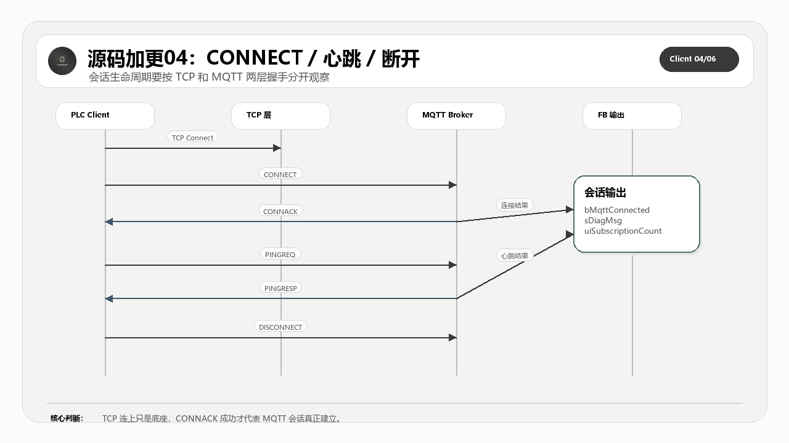

这一篇完整公开 MQTT 会话建立、CONNACK 处理、心跳和断开的代码。它对应工业现场最常见的连不上、心跳超时和断线重连问题。
适合谁收藏
- 正在对照 CONNECT/CONNACK 十六进制报文和 ST 代码的读者。
- 需要排查 KeepAlive、PINGRESP 和 DISCONNECT 收口的工程师。
- 想看 MQTT 3.1.1/5.0 版本边界如何落到变量的人。
本篇核心图

读图重点：先看源码对象之间的职责边界，再看数据、状态和错误如何沿着调用链流动。源码加更不是把文件名列出来，而是把完整代码、工程意图和验证口径一起讲清楚。
先给结论
会话生命周期只有三件事：正确建立、持续保活、明确断开。任何一步含糊，现场就会把错误统一叫成“掉线”。
从理论到代码实现链路
MQTT 标准给的是报文类型、固定头、可变头、载荷、QoS 交互和会话语义；PLC 工程真正要解决的是周期扫描、缓冲区长度、错误锁存、在线变量、连接重入和现场可诊断性。
所以这套开源实现不能只按协议章节拆，也不能只按文件名拆。正确读法是把标准约束翻译成程序对象：入口程序负责给命令和观测点，GVL 和 DUT 定义容量与数据模型，主功能块负责调度状态机，构建方法负责出站报文，处理方法负责入站报文，辅助方法负责长度、队列、事务、主题和诊断边界。
本篇完整公开 CONNECT、PINGREQ、DISCONNECT 构建和 CONNACK/PINGRESP 处理方法。
再往下一层看，这里其实有两条线同时存在。第一条是协议线：固定头、Remaining Length、PacketId、QoS、Topic、Payload 和 Reason Code 必须能按 MQTT 规则组合起来。第二条是 PLC 工程线：每个周期只能推进有限步骤，所有中间状态都要能被在线变量观察，所有错误都要能被锁存并归类，所有缓冲区长度都要在写入前被检查。
这就是源码加更必须完整公开的原因。只给几段核心片段，读者最多能看懂某个判断；把完整对象放出来，读者才能看到对象之间如何传递状态、长度、错误和诊断信息。完整源码讲解不是为了堆代码，而是为了让读者能从标准约束一路追到可运行的 ST 对象，再从现场现象反向定位到具体边界。
本篇公开的完整源码范围
| 序号 | 源码对象 | 讲解重点 |
|---|---|---|
| 1 | M_BuildConnectPacket.st | 出站报文构建，把引脚命令翻译成 MQTT 字节流 |
| 2 | M_BuildPingReqPacket.st | 出站报文构建，把引脚命令翻译成 MQTT 字节流 |
| 3 | M_BuildDisconnectPacket.st | 出站报文构建，把引脚命令翻译成 MQTT 字节流 |
| 4 | M_HandleConnAck.st | 入站报文处理，把 MQTT 响应落到状态和诊断 |
| 5 | M_HandlePingResp.st | 入站报文处理，把 MQTT 响应落到状态和诊断 |
怎么读这些源码
第一遍只看对象职责：这个文件解决哪一层问题，是入口、模型、状态、构建、接收、事务，还是诊断。
第二遍看边界变量：长度、索引、PacketId、QoS、状态枚举、错误码、缓冲区水位和在线观测量。PLC 通信代码最怕的是“能跑但不可诊断”，所以每个关键对象都要问一句：现场出问题时，我能不能从它留下的变量看出原因。
第三遍再看具体语句。源码全部公开，不等于读者要从第一行顺序读到最后一行。更稳的方式是用图和表先建立地图，再回到完整代码里确认每个边界确实落地。
工程验证路径
验证时依次看 CONNECT 报文长度、CONNACK 返回码、心跳周期和断开状态是否收口。
本篇完整开源代码
完整代码 1：M_BuildConnectPacket.st
这一段完整公开 M_BuildConnectPacket.st。读代码时先看对象职责，再看状态、长度、错误和返回值，不要只抄几行赋值。
/// =======================================================================
/// 名称 : M_BuildConnectPacket
/// 功能 : 构建 CONNECT 发送报文
/// 说明 : 按 MQTT 3.1.1/5.0 规则组装 CONNECT 报文并写入发送缓冲区。
/// 编程人员 : ControlRookie
/// 时间 : 2026-05-05
/// 版本 : V1.0
/// =======================================================================
{attribute 'hide_all_locals'}
METHOD M_BuildConnectPacket : BOOL
VAR
uiPos : UINT := 0; // 当前写入发送缓冲区的位置偏移[byte]
uiVarHeaderLen : UINT; // CONNECT 可变报头总长度[byte]
uiPayloadLen : UINT; // CONNECT 载荷总长度[byte]
uiRemainingLen : UINT; // 写入固定报头中的 Remaining Length 值[byte]
uiPropsLen : UINT; // MQTT 5.0 CONNECT 属性区总长度[byte]
i : DINT; // 清空发送缓冲区时使用的循环索引
byConnectFlags : BYTE; // 即将写入 CONNECT 报文的连接标志字节
uiTopicAliasMax : UINT; // 客户端告诉 Broker“我最多能接收多少个主题别名编号”
END_VAR
// === IMPLEMENTATION ===
// BUG-10: 缓冲区溢出保护
IF SIZEOF(aTxBuf) < 256 THEN
M_BuildConnectPacket := FALSE;
RETURN;
END_IF
IF (sPassword <> '') AND (sUsername = '') THEN
M_SetError(
uiErrorCode := TO_UINT(E_ReasonCode.uiErrInvalidParameter),
sMessage := 'Password requires username');
M_BuildConnectPacket := FALSE;
RETURN;
END_IF
IF (NOT bWillFlag) AND ((sWillTopic <> '') OR (sWillMessage <> '')) THEN
M_SetError(
uiErrorCode := TO_UINT(E_ReasonCode.uiErrInvalidParameter),
sMessage := 'Will fields require Will Flag');
M_BuildConnectPacket := FALSE;
RETURN;
END_IF
IF (bWillRetain OR (eWillQoS <> E_MqttQoS.byQoS0)) AND (NOT bWillFlag) THEN
M_SetError(
uiErrorCode := TO_UINT(E_ReasonCode.uiErrInvalidParameter),
sMessage := 'Invalid will flag combination');
M_BuildConnectPacket := FALSE;
RETURN;
END_IF
IF bWillFlag AND (sWillTopic = '') THEN
M_SetError(
uiErrorCode := TO_UINT(E_ReasonCode.uiErrInvalidParameter),
sMessage := 'Will topic is required');
M_BuildConnectPacket := FALSE;
RETURN;
END_IF
// 清空发送缓冲区，避免数据干扰
FOR i := LOWER_BOUND(aTxBuf, 1) TO UPPER_BOUND(aTxBuf, 1) DO
aTxBuf[i] := 0;
END_FOR
/// =======================================================================
/// 长度计算
/// =======================================================================
// 可变报头长度: 协议名(6) + 协议版本(1) + 连接标志(1) + 保持连接(2)
uiVarHeaderLen := 10;
// MQTT 5.0: 连接属性长度
uiPropsLen := 0;
IF eVersion = E_MqttVersion.byMqttVersion50 THEN
// Session Expiry Interval (4字节值 + 1字节标识符)
IF udiSessionExpiry > 0 THEN
uiPropsLen := uiPropsLen + 5;
END_IF
// Receive Maximum (2字节值 + 1字节标识符)
uiPropsLen := uiPropsLen + 3;
// Maximum Packet Size (4字节值 + 1字节标识符)
uiPropsLen := uiPropsLen + 5;
// Topic Alias Maximum (2字节值 + 1字节标识符)
uiPropsLen := uiPropsLen + 3;
// Request Problem Information (1字节值 + 1字节标识符)
uiPropsLen := uiPropsLen + 2;
// Request Response Information (1字节值 + 1字节标识符)
IF bRequestResponseInfo THEN
uiPropsLen := uiPropsLen + 2;
END_IF
// 属性长度字段的编码长度
IF uiPropsLen < 128 THEN
uiVarHeaderLen := uiVarHeaderLen + 1 + uiPropsLen; //1字节属性长度
ELSE
uiVarHeaderLen := uiVarHeaderLen + 2 + uiPropsLen; //2字节属性长度
END_IF
END_IF
// 计算 CONNECT 载荷总长度
uiPayloadLen := TO_UINT(2 + LEN(sClientID)); //Client ID
IF sUsername <> '' THEN
uiPayloadLen := uiPayloadLen + TO_UINT(2 + LEN(sUsername));
END_IF
IF sPassword <> '' THEN
uiPayloadLen := uiPayloadLen + TO_UINT(2 + LEN(sPassword));
END_IF
IF bWillFlag THEN
IF eVersion = E_MqttVersion.byMqttVersion50 THEN
uiPayloadLen := uiPayloadLen + 1;
END_IF
uiPayloadLen := uiPayloadLen + TO_UINT(2 + LEN(sWillTopic) + 2 + LEN(sWillMessage));
END_IF
IF uiReceiveMax = 0 THEN
M_SetError(
uiErrorCode := TO_UINT(E_ReasonCode.uiErrInvalidParameter),
sMessage := 'Receive Maximum must not be zero');
M_BuildConnectPacket := FALSE;
RETURN;
END_IF
IF udMaxPacketSize = 0 THEN
M_SetError(
uiErrorCode := TO_UINT(E_ReasonCode.uiErrInvalidParameter),
sMessage := 'Maximum Packet Size must not be zero');
M_BuildConnectPacket := FALSE;
RETURN;
END_IF
// 计算 Remaining Length 值
uiRemainingLen := uiVarHeaderLen + uiPayloadLen;
// 缓冲区长度检查
IF uiRemainingLen + 5 > SIZEOF(aTxBuf) THEN
M_BuildConnectPacket := FALSE;
RETURN;
END_IF
/// =======================================================================
/// 创建报文
/// =======================================================================
uiPos := 0;
// ****************** 固定报文头 = 报文类型 + Remaining Length ******************
// 报文类型
aTxBuf[0] := E_MqttPacketType.byConnect;
uiPos := uiPos + 1;
// Remaining Length 值
uiPos := uiPos + M_EncodeRemainingLength(uiRemainingLen, ADR(aTxBuf[uiPos]));
// ****************** 可变报文头 = 协议名(6) + 协议版本(1) + 连接标志(1) + 保持连接(2) ******************
// 协议名："MQTT"
aTxBuf[uiPos] := 0; //长度高字节MSB
uiPos := uiPos + 1;
aTxBuf[uiPos] := 4; //长度低字节LSB
uiPos := uiPos + 1;
aTxBuf[uiPos] := 77; // 'M'
uiPos := uiPos + 1;
aTxBuf[uiPos] := 81; // 'Q'
uiPos := uiPos + 1;
aTxBuf[uiPos] := 84; // 'T'
uiPos := uiPos + 1;
aTxBuf[uiPos] := 84; // 'T'
uiPos := uiPos + 1;
// 协议版本（根据eVersion选择）
IF eVersion = E_MqttVersion.byMqttVersion50 THEN
aTxBuf[uiPos] := 5; //MQTT 5.0
ELSE
aTxBuf[uiPos] := 4; //MQTT 3.1.1
END_IF
uiPos := uiPos + 1;
// 连接标志
byConnectFlags :=
(BOOL_TO_BYTE(FALSE) * 1) OR //Bit 0: Reserved。服务端必须验证保留标志位是否为0
(BOOL_TO_BYTE(bCleanSession) * 2) OR //Bit 1: Clean Session
(BOOL_TO_BYTE(bWillFlag AND sWillTopic <> '') * 4) OR //Bit 2: Will Flag
(BOOL_TO_BYTE(eWillQoS = 1 OR eWillQoS = 3) * 8) OR //Bit 3: Will QoS低位
(BOOL_TO_BYTE(eWillQoS = 2 OR eWillQoS = 3) * 16) OR //Bit 4: Will QoS高位
(BOOL_TO_BYTE(bWillFlag AND bWillRetain) * 32) OR //Bit 5: Will Retain
(BOOL_TO_BYTE(sPassword <> '') * 64) OR //Bit 6: Password Flag
(BOOL_TO_BYTE(sUsername <> '') * 128); //Bit 7: Username Flag
aTxBuf[uiPos] := byConnectFlags;
uiPos := uiPos + 1;
// 保持连接
aTxBuf[uiPos] := UINT_TO_BYTE(SHR(uiKeepAlive, 8)); //KeepAlive高字节
uiPos := uiPos + 1;
aTxBuf[uiPos] := UINT_TO_BYTE(uiKeepAlive AND 16#FF); //KeepAlive低字节
uiPos := uiPos + 1;
// ****************** MQTT 5.0: 连接属性 ******************
IF eVersion = E_MqttVersion.byMqttVersion50 THEN
// 属性长度（可变字节编码）
IF uiPropsLen < 128 THEN
aTxBuf[uiPos] := TO_BYTE(uiPropsLen);
uiPos := uiPos + 1;
ELSE
aTxBuf[uiPos] := TO_BYTE((uiPropsLen / 128) OR 16#80);
uiPos := uiPos + 1;
aTxBuf[uiPos] := TO_BYTE(uiPropsLen MOD 128);
uiPos := uiPos + 1;
END_IF
// Session Expiry Interval
IF udiSessionExpiry > 0 THEN
aTxBuf[uiPos] := GVL_Mqtt.cnPropSessionExpiry; uiPos := uiPos + 1;
aTxBuf[uiPos] := UDINT_TO_BYTE(SHR(udiSessionExpiry, 24) AND 16#FF); uiPos := uiPos + 1;
aTxBuf[uiPos] := UDINT_TO_BYTE(SHR(udiSessionExpiry, 16) AND 16#FF); uiPos := uiPos + 1;
aTxBuf[uiPos] := UDINT_TO_BYTE(SHR(udiSessionExpiry, 8) AND 16#FF); uiPos := uiPos + 1;
aTxBuf[uiPos] := UDINT_TO_BYTE(udiSessionExpiry AND 16#FF); uiPos := uiPos + 1;
END_IF
// Receive Maximum
aTxBuf[uiPos] := GVL_Mqtt.cnPropReceiveMaximum; uiPos := uiPos + 1;
aTxBuf[uiPos] := UINT_TO_BYTE(SHR(uiReceiveMax, 8)); uiPos := uiPos + 1;
aTxBuf[uiPos] := UINT_TO_BYTE(uiReceiveMax AND 16#FF); uiPos := uiPos + 1;
// Maximum Packet Size
aTxBuf[uiPos] := GVL_Mqtt.cnPropMaxPacketSize; uiPos := uiPos + 1;
aTxBuf[uiPos] := UDINT_TO_BYTE(SHR(udMaxPacketSize, 24) AND 16#FF); uiPos := uiPos + 1;
aTxBuf[uiPos] := UDINT_TO_BYTE(SHR(udMaxPacketSize, 16) AND 16#FF); uiPos := uiPos + 1;
aTxBuf[uiPos] := UDINT_TO_BYTE(SHR(udMaxPacketSize, 8) AND 16#FF); uiPos := uiPos + 1;
aTxBuf[uiPos] := UDINT_TO_BYTE(udMaxPacketSize AND 16#FF); uiPos := uiPos + 1;
// Topic Alias Maximum
uiTopicAliasMax := GVL_Mqtt.cnMaxTopicAlias;
aTxBuf[uiPos] := GVL_Mqtt.cnPropTopicAliasMax; uiPos := uiPos + 1;
aTxBuf[uiPos] := UINT_TO_BYTE(SHR(uiTopicAliasMax, 8)); uiPos := uiPos + 1;
aTxBuf[uiPos] := UINT_TO_BYTE(uiTopicAliasMax AND 16#FF); uiPos := uiPos + 1;
// Request Problem Information
aTxBuf[uiPos] := GVL_Mqtt.cnPropRequestProblemInfo; uiPos := uiPos + 1;
aTxBuf[uiPos] := BOOL_TO_BYTE(bRequestProblemInfo); uiPos := uiPos + 1;
// Request Response Information
IF bRequestResponseInfo THEN
aTxBuf[uiPos] := GVL_Mqtt.cnPropRequestResponseInfo; uiPos := uiPos + 1;
aTxBuf[uiPos] := 1; uiPos := uiPos + 1;
END_IF
END_IF
// ****************** 载荷 = 客户端标识符 + 遗嘱主题 + 遗嘱消息 + 用户名 + 密码 ******************
// 客户端标识符
uiPos := uiPos + M_AppendString(sClientID, ADR(aTxBuf[uiPos]));
// 遗嘱主题 + 遗嘱消息
IF bWillFlag THEN
IF eVersion = E_MqttVersion.byMqttVersion50 THEN
aTxBuf[uiPos] := 0;
uiPos := uiPos + 1;
END_IF
uiPos := uiPos + M_AppendString(sWillTopic, ADR(aTxBuf[uiPos]));
uiPos := uiPos + M_AppendString(sWillMessage, ADR(aTxBuf[uiPos]));
END_IF
// 用户名
IF sUsername <> '' THEN
uiPos := uiPos + M_AppendString(sUsername, ADR(aTxBuf[uiPos]));
END_IF
// 密码
IF sPassword <> '' THEN
uiPos := uiPos + M_AppendString(sPassword, ADR(aTxBuf[uiPos]));
END_IF
uiTxLength := uiPos; //需要发送的报文总字节数
M_BuildConnectPacket := TRUE;完整代码 2：M_BuildPingReqPacket.st
这一段完整公开 M_BuildPingReqPacket.st。读代码时先看对象职责，再看状态、长度、错误和返回值，不要只抄几行赋值。
/// =======================================================================
/// 名称 : M_BuildPingReqPacket
/// 功能 : 构建 PINGREQ 发送报文
/// 说明 : 生成 MQTT 心跳请求固定报文头并更新发送长度。
/// 编程人员 : ControlRookie
/// 时间 : 2026-05-05
/// 版本 : V1.0
/// =======================================================================
{attribute 'hide_all_locals'}
METHOD M_BuildPingReqPacket : BOOL
VAR
uiPos : UINT := 0; // 当前写入发送缓冲区的位置偏移[byte]
i : DINT; // 清空发送缓冲区时使用的循环索引
END_VAR
// === IMPLEMENTATION ===
// BUG-10: 缓冲区溢出保护
IF SIZEOF(aTxBuf) < 2 THEN
M_BuildPingReqPacket := FALSE;
RETURN;
END_IF
// 清空发送缓冲区，避免数据干扰
FOR i := LOWER_BOUND(aTxBuf, 1) TO UPPER_BOUND(aTxBuf, 1) DO
aTxBuf[i] := 0;
END_FOR
/// =======================================================================
/// 创建报文
/// =======================================================================
uiPos := 0;
// ****************** 固定报文头 = 报文类型 + Remaining Length ******************
// 报文类型
aTxBuf[0] := E_MqttPacketType.byPingReq;
uiPos := uiPos + 1;
// Remaining Length: 0
aTxBuf[uiPos] := 0;
uiPos := uiPos + 1;
uiTxLength := uiPos; //需要发送的报文总字节数
M_BuildPingReqPacket := TRUE;
;完整代码 3：M_BuildDisconnectPacket.st
这一段完整公开 M_BuildDisconnectPacket.st。读代码时先看对象职责，再看状态、长度、错误和返回值，不要只抄几行赋值。
/// =======================================================================
/// 名称 : M_BuildDisconnectPacket
/// 功能 : 构建 DISCONNECT 发送报文
/// 说明 : 根据 MQTT 版本生成断开连接报文并更新发送长度。
/// 编程人员 : ControlRookie
/// 时间 : 2026-05-05
/// 版本 : V1.0
/// =======================================================================
{attribute 'hide_all_locals'}
METHOD M_BuildDisconnectPacket : BOOL
VAR
uiPos : UINT := 0; // 当前写入发送缓冲区的位置偏移[byte]
uiRemainingLen : UINT; // 写入固定报头中的 Remaining Length 值[byte]
i : DINT; // 清空发送缓冲区时使用的循环索引
END_VAR
// === IMPLEMENTATION ===
// BUG-10: 缓冲区溢出保护
IF SIZEOF(aTxBuf) < 4 THEN
M_BuildDisconnectPacket := FALSE;
RETURN;
END_IF
// 清空发送缓冲区，避免数据干扰
FOR i := LOWER_BOUND(aTxBuf, 1) TO UPPER_BOUND(aTxBuf, 1) DO
aTxBuf[i] := 0;
END_FOR
/// =======================================================================
/// 创建报文
/// =======================================================================
uiPos := 0;
IF eVersion = E_MqttVersion.byMqttVersion50 THEN
// MQTT 5.0: DISCONNECT包含Reason Code和属性
uiRemainingLen := 2; //Reason Code(1) + 属性长度(1)
// 报文类型
aTxBuf[0] := E_MqttPacketType.byDisconnect;
uiPos := 1;
// Remaining Length 值
uiPos := uiPos + M_EncodeRemainingLength(uiRemainingLen, ADR(aTxBuf[uiPos]));
// Reason Code: 0x00 = Normal disconnection
aTxBuf[uiPos] := 16#00;
uiPos := uiPos + 1;
// 属性长度: 0（无属性）
aTxBuf[uiPos] := 0;
uiPos := uiPos + 1;
ELSE
// MQTT 3.1.1: 固定报文头(2字节)
aTxBuf[0] := E_MqttPacketType.byDisconnect;
// BUG-02修复: 原代码 aTxBuf[0] := 0 覆盖了报文类型，改为 aTxBuf[1] := 0
aTxBuf[1] := 0;
uiPos := 2;
END_IF
uiTxLength := uiPos; //需要发送的报文总字节数
M_BuildDisconnectPacket := TRUE;
;完整代码 4：M_HandleConnAck.st
这一段完整公开 M_HandleConnAck.st。读代码时先看对象职责，再看状态、长度、错误和返回值，不要只抄几行赋值。
/// =======================================================================
/// 名称 : M_HandleConnAck
/// 功能 : 处理 CONNACK 接收报文
/// 说明 : 解析连接确认结果与服务器属性，成功后清除等待确认状态。
/// 编程人员 : ControlRookie
/// 时间 : 2026-05-05
/// 版本 : V1.1
/// =======================================================================
{attribute 'hide_all_locals'}
METHOD M_HandleConnAck : BOOL
VAR
byReasonCode : BYTE; // CONNACK 原因码
byConnAckFlags : BYTE; // CONNACK 标志位
uiPropsLen : UINT; // 属性总长度
uiPropertyHeaderBytes : UINT; // 解析 CONNACK 属性长度这个 VBI 字段实际消耗的字节数[byte]
uiPropsStart : UINT; // 属性起始偏移
uiPropsEnd : UINT; // 属性结束偏移
uiPos : UINT; // 当前解析偏移
byPropId : BYTE; // 当前属性标识符
uiLoopGuard : UINT; // 解析属性列表时的循环保护计数器，防止异常报文卡死状态机
END_VAR
// === IMPLEMENTATION ===
/// 先检查当前缓冲区里是否至少有一帧最小 CONNACK，
/// 并确认我们现在确实处在“等待 CONNACK”这个会话阶段。
IF uiRxLength < 4 THEN
M_HandleConnAck := FALSE;
RETURN;
END_IF
IF NOT xWaitingForAck OR aRxBuf[0] <> byExpectedMsgType THEN
M_HandleConnAck := FALSE;
RETURN;
END_IF
byConnAckFlags := aRxBuf[2];
/// CONNACK 标志位除 Session Present 外其余位都必须为 0。
IF (byConnAckFlags AND 16#FE) <> 0 THEN
sDiagMsg := 'Invalid CONNACK flags';
M_HandleConnAck := FALSE;
RETURN;
END_IF
IF eVersion = E_MqttVersion.byMqttVersion50 THEN
byReasonCode := aRxBuf[3];
ELSE
byReasonCode := aRxBuf[3];
END_IF
/// 原因码非 0 代表建连被拒绝。
/// 这里不仅要翻译成可读诊断，还要消费掉当前失败 CONNACK，
/// 避免下一次重新连接时又把旧失败报文重复判一次。
IF byReasonCode <> 0 THEN
IF eVersion = E_MqttVersion.byMqttVersion50 THEN
CASE byReasonCode OF
E_MqttReasonCode.byUnsupportedProtocolVersion: sDiagMsg := 'Protocol version not supported';
E_MqttReasonCode.byClientIdentifierInvalid: sDiagMsg := 'Client identifier invalid';
E_MqttReasonCode.byBadUserNamePassword: sDiagMsg := 'Bad username or password';
E_MqttReasonCode.byNotAuthorized: sDiagMsg := 'Not authorized';
E_MqttReasonCode.byServerUnavailable: sDiagMsg := 'Server unavailable';
E_MqttReasonCode.byServerBusy: sDiagMsg := 'Server busy';
E_MqttReasonCode.byBanned: sDiagMsg := 'Banned';
E_MqttReasonCode.byServerShuttingDown: sDiagMsg := 'Server shutting down';
E_MqttReasonCode.byBadAuthMethod: sDiagMsg := 'Bad authentication method';
E_MqttReasonCode.byQuotaExceeded: sDiagMsg := 'Quota exceeded';
E_MqttReasonCode.byRetainNotSupported: sDiagMsg := 'Retain not supported';
E_MqttReasonCode.byQosNotSupported: sDiagMsg := 'QoS not supported';
E_MqttReasonCode.byUseAnotherServer: sDiagMsg := 'Use another server';
E_MqttReasonCode.byServerMoved: sDiagMsg := 'Server moved';
ELSE
sDiagMsg := CONCAT('CONNACK reason code: ', BYTE_TO_STRING(byReasonCode));
END_CASE
ELSE
CASE byReasonCode OF
1: sDiagMsg := 'Unacceptable protocol version';
2: sDiagMsg := 'Identifier rejected';
3: sDiagMsg := 'Server unavailable';
4: sDiagMsg := 'Bad username or password';
5: sDiagMsg := 'Not authorized';
ELSE
sDiagMsg := CONCAT('CONNACK return code: ', BYTE_TO_STRING(byReasonCode));
END_CASE
END_IF
uiRxLength := 0;
xWaitingForAck := FALSE;
M_HandleConnAck := FALSE;
RETURN;
END_IF
/// 先把服务端能力恢复到“默认全开”假设，
/// 再根据 MQTT 5.0 属性逐项覆盖，这样缺省属性也能得到合理值。
uiServerReceiveMax := GVL_Mqtt.cnDefaultReceiveMax;
byServerMaxQoS := TO_BYTE(E_MqttQoS.byQoS2);
bServerRetainAvailable := TRUE;
udServerMaxPacketSize := GVL_Mqtt.cnMaxPacketSize;
uiServerTopicAliasMax := 0;
uiSendQuota := GVL_Mqtt.cnDefaultReceiveMax;
bServerWildcardSubAvail := TRUE;
bServerSubIdAvail := TRUE;
bServerSharedSubAvail := TRUE;
IF eVersion = E_MqttVersion.byMqttVersion50 AND uiRxLength >= 5 THEN
uiPos := 4;
uiPropertyHeaderBytes := M_DecodeRemainingLength(pBuffer := ADR(aRxBuf[uiPos]), uiLength => uiPropsLen);
IF uiPropertyHeaderBytes = 0 THEN
M_HandleConnAck := FALSE;
RETURN;
END_IF
uiPos := uiPos + uiPropertyHeaderBytes;
uiPropsStart := uiPos;
uiPropsEnd := uiPropsStart + uiPropsLen;
IF uiPropsEnd > uiRxLength THEN
M_HandleConnAck := FALSE;
RETURN;
END_IF
uiLoopGuard := 0;
/// 这里只解析当前客户端已经真正使用的 CONNACK 属性，
/// 例如 Receive Maximum、Max QoS、Retain Available、Topic Alias 等。
WHILE uiPos < uiPropsEnd AND uiPos < uiRxLength AND uiLoopGuard < GVL_Mqtt.cnMaxPropertyLoop DO
byPropId := aRxBuf[uiPos];
uiPos := uiPos + 1;
CASE byPropId OF
GVL_Mqtt.cnPropReceiveMaximum:
IF uiPos + 1 >= uiPropsEnd THEN
M_HandleConnAck := FALSE;
RETURN;
END_IF
uiServerReceiveMax := SHL(BYTE_TO_UINT(aRxBuf[uiPos]), 8) OR BYTE_TO_UINT(aRxBuf[uiPos + 1]);
IF uiServerReceiveMax = 0 THEN
sDiagMsg := 'Receive Maximum must not be zero';
M_HandleConnAck := FALSE;
RETURN;
END_IF
uiPos := uiPos + 2;
GVL_Mqtt.cnPropMaxQoS:
IF uiPos >= uiPropsEnd THEN
M_HandleConnAck := FALSE;
RETURN;
END_IF
byServerMaxQoS := aRxBuf[uiPos];
IF byServerMaxQoS > TO_BYTE(E_MqttQoS.byQoS2) THEN
sDiagMsg := 'Server Max QoS is invalid';
M_HandleConnAck := FALSE;
RETURN;
END_IF
uiPos := uiPos + 1;
GVL_Mqtt.cnPropRetainAvailable:
IF uiPos >= uiPropsEnd THEN
M_HandleConnAck := FALSE;
RETURN;
END_IF
bServerRetainAvailable := BYTE_TO_BOOL(aRxBuf[uiPos]);
uiPos := uiPos + 1;
GVL_Mqtt.cnPropMaxPacketSize:
IF uiPos + 3 >= uiPropsEnd THEN
M_HandleConnAck := FALSE;
RETURN;
END_IF
udServerMaxPacketSize := SHL(BYTE_TO_UDINT(aRxBuf[uiPos]), 24) OR SHL(BYTE_TO_UDINT(aRxBuf[uiPos + 1]), 16) OR SHL(BYTE_TO_UDINT(aRxBuf[uiPos + 2]), 8) OR BYTE_TO_UDINT(aRxBuf[uiPos + 3]);
IF udServerMaxPacketSize = 0 THEN
sDiagMsg := 'Server Maximum Packet Size must not be zero';
M_HandleConnAck := FALSE;
RETURN;
END_IF
uiPos := uiPos + 4;
GVL_Mqtt.cnPropTopicAliasMax:
IF uiPos + 1 >= uiPropsEnd THEN
M_HandleConnAck := FALSE;
RETURN;
END_IF
uiServerTopicAliasMax := SHL(BYTE_TO_UINT(aRxBuf[uiPos]), 8) OR BYTE_TO_UINT(aRxBuf[uiPos + 1]);
uiPos := uiPos + 2;
GVL_Mqtt.cnPropReasonString:
IF uiPos + 1 >= uiPropsEnd THEN
M_HandleConnAck := FALSE;
RETURN;
END_IF
uiPos := uiPos + 2 + (SHL(BYTE_TO_UINT(aRxBuf[uiPos]), 8) OR BYTE_TO_UINT(aRxBuf[uiPos + 1]));
GVL_Mqtt.cnPropServerKeepAlive:
IF uiPos + 1 >= uiPropsEnd THEN
M_HandleConnAck := FALSE;
RETURN;
END_IF
uiKeepAlive := SHL(BYTE_TO_UINT(aRxBuf[uiPos]), 8) OR BYTE_TO_UINT(aRxBuf[uiPos + 1]);
uiPos := uiPos + 2;
GVL_Mqtt.cnPropAssignedClientId:
IF uiPos + 1 >= uiPropsEnd THEN
M_HandleConnAck := FALSE;
RETURN;
END_IF
uiPos := uiPos + 2 + (SHL(BYTE_TO_UINT(aRxBuf[uiPos]), 8) OR BYTE_TO_UINT(aRxBuf[uiPos + 1]));
GVL_Mqtt.cnPropAuthMethod,
GVL_Mqtt.cnPropAuthData,
GVL_Mqtt.cnPropServerReference:
IF uiPos + 1 >= uiPropsEnd THEN
M_HandleConnAck := FALSE;
RETURN;
END_IF
uiPos := uiPos + 2 + (SHL(BYTE_TO_UINT(aRxBuf[uiPos]), 8) OR BYTE_TO_UINT(aRxBuf[uiPos + 1]));
GVL_Mqtt.cnPropResponseInfo:
IF uiPos + 1 >= uiPropsEnd THEN
M_HandleConnAck := FALSE;
RETURN;
END_IF
uiPos := uiPos + 2 + (SHL(BYTE_TO_UINT(aRxBuf[uiPos]), 8) OR BYTE_TO_UINT(aRxBuf[uiPos + 1]));
GVL_Mqtt.cnPropUserProperty:
IF uiPos + 1 >= uiPropsEnd THEN
M_HandleConnAck := FALSE;
RETURN;
END_IF
uiPos := uiPos + 2 + (SHL(BYTE_TO_UINT(aRxBuf[uiPos]), 8) OR BYTE_TO_UINT(aRxBuf[uiPos + 1]));
IF uiPos + 1 >= uiPropsEnd THEN
M_HandleConnAck := FALSE;
RETURN;
END_IF
uiPos := uiPos + 2 + (SHL(BYTE_TO_UINT(aRxBuf[uiPos]), 8) OR BYTE_TO_UINT(aRxBuf[uiPos + 1]));
GVL_Mqtt.cnPropWildcardSubAvail,
GVL_Mqtt.cnPropSubIdAvail,
GVL_Mqtt.cnPropSharedSubAvail:
IF uiPos >= uiPropsEnd THEN
M_HandleConnAck := FALSE;
RETURN;
END_IF
CASE byPropId OF
GVL_Mqtt.cnPropWildcardSubAvail:
bServerWildcardSubAvail := BYTE_TO_BOOL(aRxBuf[uiPos]);
GVL_Mqtt.cnPropSubIdAvail:
bServerSubIdAvail := BYTE_TO_BOOL(aRxBuf[uiPos]);
GVL_Mqtt.cnPropSharedSubAvail:
bServerSharedSubAvail := BYTE_TO_BOOL(aRxBuf[uiPos]);
END_CASE
uiPos := uiPos + 1;
GVL_Mqtt.cnPropRequestProblemInfo,
GVL_Mqtt.cnPropRequestResponseInfo:
IF uiPos >= uiPropsEnd THEN
M_HandleConnAck := FALSE;
RETURN;
END_IF
uiPos := uiPos + 1;
ELSE
M_HandleConnAck := FALSE;
RETURN;
END_CASE
uiLoopGuard := uiLoopGuard + 1;
END_WHILE
END_IF
/// 到这里说明本帧 CONNACK 已完整消费，可以清掉等待态和接收缓存。
uiRxLength := 0;
xWaitingForAck := FALSE;
/// MQTT 5.0 下，服务端的 Receive Maximum 决定了我们允许并发挂起多少条出站 QoS>0 消息。
IF eVersion = E_MqttVersion.byMqttVersion50 THEN
uiSendQuota := uiServerReceiveMax;
END_IF
/// Session Present / Clean Session 共同决定“这次连上后是否需要自动补订本地订阅意图”。
IF NOT bCleanSession THEN
IF (byConnAckFlags AND GVL_Mqtt.cnConnAckSessionPresent) = 0 THEN
M_InflightClear();
IF uiSubscriptionCount > 0 THEN
bRestoreSubscriptions := TRUE;
uiRestoreSubscriptionIndex := 0;
ELSE
bRestoreSubscriptions := FALSE;
END_IF
sActiveSubTopic := '';
eActiveSubQoS := E_MqttQoS.byQoS0;
udiActiveSubscriptionId := 0;
bActiveSubscribeRestore := FALSE;
ELSE
bRestoreSubscriptions := FALSE;
uiRestoreSubscriptionIndex := 0;
END_IF
ELSE
M_InflightClear();
IF uiSubscriptionCount > 0 THEN
bRestoreSubscriptions := TRUE;
uiRestoreSubscriptionIndex := 0;
ELSE
bRestoreSubscriptions := FALSE;
uiRestoreSubscriptionIndex := 0;
END_IF
sActiveSubTopic := '';
eActiveSubQoS := E_MqttQoS.byQoS0;
udiActiveSubscriptionId := 0;
bActiveSubscribeRestore := FALSE;
END_IF
/// Topic Alias 映射属于会话态缓存，连上新会话后统一从空表重新建立。
M_TopicAliasClear();
M_HandleConnAck := TRUE;完整代码 5：M_HandlePingResp.st
这一段完整公开 M_HandlePingResp.st。读代码时先看对象职责，再看状态、长度、错误和返回值，不要只抄几行赋值。
/// =======================================================================
/// 名称 : M_HandlePingResp
/// 功能 : 兼容桩方法，保留 PINGRESP 旧接口
/// 说明 : 该方法已废弃，实际处理逻辑已迁移至 M_ProcessReceive，仅为兼容旧调用保留。
/// 编程人员 : ControlRookie
/// 时间 : 2026-05-05
/// 版本 : V1.0
/// =======================================================================
{attribute 'hide_all_locals'}
METHOD M_HandlePingResp : BOOL
// === IMPLEMENTATION ===
// 逻辑已移至M_ProcessReceive
M_HandlePingResp := FALSE;这一篇你最该记住的几句话
- 源码加更不是片段展示，而是完整源码对象公开讲解。
- 先建立对象地图，再读状态、报文和事务，现场调试才不会迷路。
- 判断源码成熟度，不只看功能是否实现，还要看边界、错误和在线观测量是否闭环。
系列导航
- 系列定位：MqttClient 系列教程，源码加更阶段，第 14 篇 / 共 16 篇
- 上一篇：源码加更03
- 下一篇：源码加更05
评论区预留
这里先保留评论和回复结构，不接入第三方服务。后续统一决定登录、匿名、审核、反垃圾和静态站兼容策略。